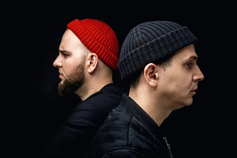
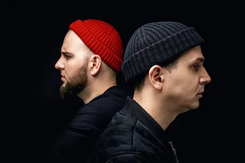

Макс Корж
Макс Корж — молодой музыкант из Минска, выходец из тусовки MU SKOOL, с легкостью смешивающий в своем творчестве электронную музыку, рэп и задушевное пение. Начинал Макс, как и многие юноши, с социального рэпа, причем, на белорусском языке, но довольно скоро понял, что его талант в другом. В том, что он может простыми и точными фразами передать целую гамму чувств и мыслей, близких многим. И сделать это в красивой, хитовой форме.
Лучшие альбомы:
Психи попадают в Топ Малый Повзрослел
Перейти на Первую страницу: Перейти на Третью страницу:
 
